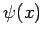
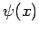
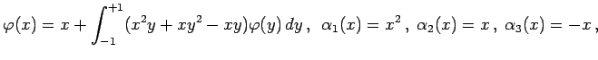

Inhalt Index DeskTop Bronstein

 Lineare Integralgleichungen Fredholmsche Integralgleichungen 2. Art Integralgleichungen mit ausgearteten Kernen
Lineare Integralgleichungen Fredholmsche Integralgleichungen 2. Art Integralgleichungen mit ausgearteten Kernen


Es bleibt noch zu untersuchen, unter welchen Bedingungen im Fall  auch die inhomogene Integralgleichung eine Lösung besitzt. Zu diesem Zweck führt man die zu (11.4a) transponierte Integralgleichung ein:
auch die inhomogene Integralgleichung eine Lösung besitzt. Zu diesem Zweck führt man die zu (11.4a) transponierte Integralgleichung ein:
 |
(11.9a) |
Es sei  ein Eigenwert und
ein Eigenwert und  eine Lösung der inhomogenen Integralgleichung (11.4a). Dann läßt sich zeigen, daß
eine Lösung der inhomogenen Integralgleichung (11.4a). Dann läßt sich zeigen, daß  auch Eigenwert der transponierten Gleichung ist. Man multipliziert beide Seiten von (11.4a) mit irgendeiner Lösung  der homogenen transponierten Integralgleichung und integriert anschließend über x in den Grenzen von a bis b:
auch Eigenwert der transponierten Gleichung ist. Man multipliziert beide Seiten von (11.4a) mit irgendeiner Lösung  der homogenen transponierten Integralgleichung und integriert anschließend über x in den Grenzen von a bis b:
| (11.9b) |
Da vorausgesetzt war, erhält man die Forderung .
Insgesamt gilt also: Die inhomogene Integralgleichung (11.4a) ist für einen Eigenwert  genau dann lösbar, wenn die Störfunktion f(x) orthogonal zu allen nichtverschwindenden Lösungen der homogenen transponierten Integralgleichung mit demselben
genau dann lösbar, wenn die Störfunktion f(x) orthogonal zu allen nichtverschwindenden Lösungen der homogenen transponierten Integralgleichung mit demselben  ist. Diese Aussage ist nicht auf Integralgleichungen mit ausgearteten Kernen eingeschränkt, sondern gilt auch für Integralgleichungen mit allgemeineren Kernen.
ist. Diese Aussage ist nicht auf Integralgleichungen mit ausgearteten Kernen eingeschränkt, sondern gilt auch für Integralgleichungen mit allgemeineren Kernen.
| Beispiel A |
|
 |
| Beispiel B |
|
, d.h.: |
Hinweis: Das angegebene Lösungsverfahren ist besonders einfach, bleibt aber auf ausgeartete Kerne beschränkt. Die Methode kann jedoch auch für Integralgleichungen mit allgemeineren Kernen als Näherungsverfahren angewendet werden, indem man den Kern durch einen ausgearteten Kern hinreichend gut approximiert.